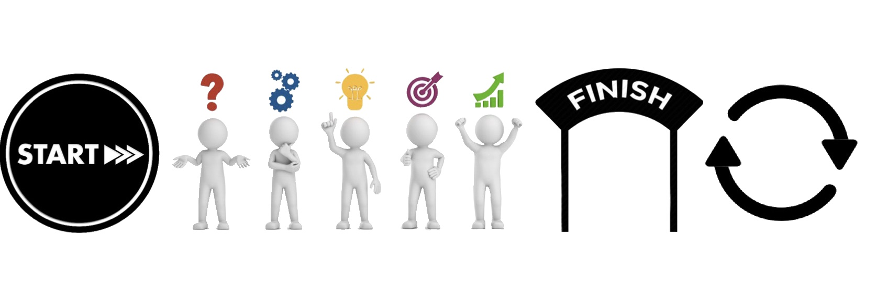
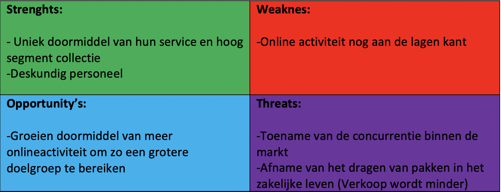
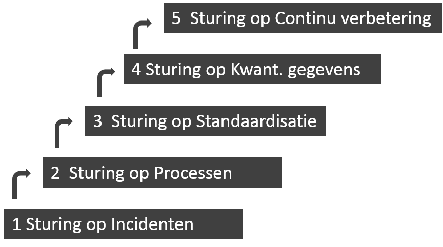
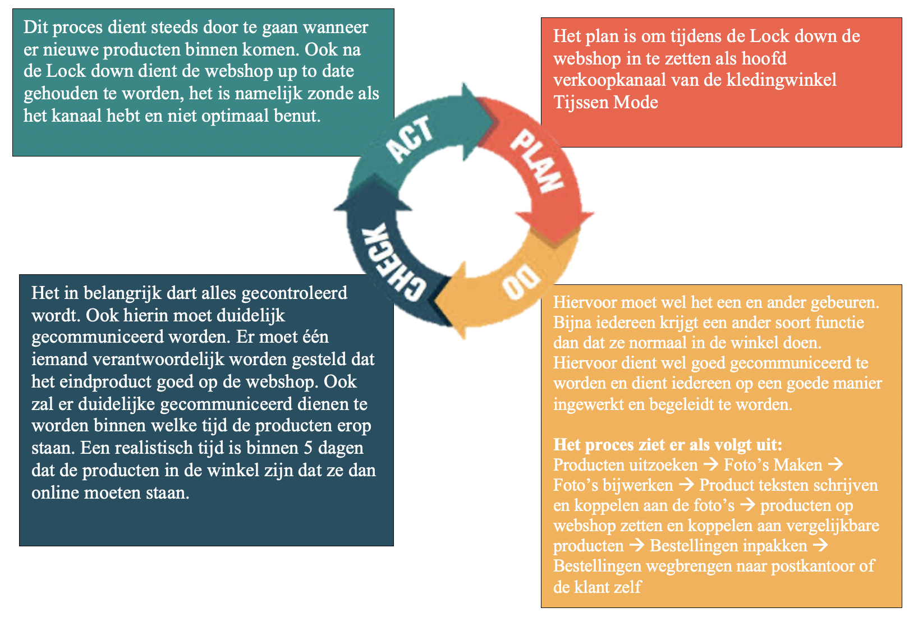

In dit onderdeel van het portfolio van Kai Kroon zal er verder ingegaan worden op het vak Smart Start. Hier zullen onder andere de week opdrachten, de competenties en mijn ervaringen binnen dit vak besproken worden.
Veel leesplezier!

De visie die voor mij belangrijk is op gebied van Smart Industry:
De snelle ontwikkelingen binnen de technologie gebruiken om zo duurzamer ten werk te gaan zodat volgende generaties op dezelfde manier van de aarde kunnen genieten zoals wij dat momenteel mogen doen.
Een van de meest inspirerende voorbeeld die nieuwe technologieën in de huidige markt is voor mijn wel Elon Musk. Elon Musk staat ook wel bekend als de CEO van het grote autobedrijf Tesla. Dit bedrijf wordt ook wel beschreven als de Apple onder de auto merken, ondanks dat het bedrijf al een paar keer dicht bij een faillissement gezeten heeft hebben ze toch op de dag van vandaag een grote klantengroep voor hen weten te winnen. Wat Musk met Tesla wil bereiken is de overgang van de huidige economie, gebaseerd op het winnen en verbranden van koolwaterstof, naar een economie op zonne-energie versnellen. Hieruit is dus de huidige auto van Tesla ontstaan, hierin hebben de gebruikers een volledig elektrische auto en hoeven deze mensen niet in te leveren op het gemak of rijplezier.
De eerste auto van Tesla was de dure sportauto de Roadster, dit is geen auto waarmee ze de markt kunne veroveren. Deze peperdure en gewilde sportauto is gemaakt voor een klein deel van het marktsegment waarmee ze veel geld kunnen ophalen. Dit opgehaalde geld investeren ze weer in nieuwe technologieën op zo een lager geprijsde auto te kunnen ontwikkelen die geschikt is voor een grotere markt.
Nu het bedrijf veel aan het groeien gaan ze zich steeds meer focussen op de productie van de energiebronnen op zonne-energie. Naast de superchargers en baterijen die nu in de auto zit gaan ze zich ook steeds meer focussen op daken en muren die zonne-energie opwekken en opslaan. Tesla staat voor toegankelijke innovatie, dit doen ze door de grenzen va het autorijden te verleggen en het maken van nieuwe technologieën voor de massa die zorgen voor een betere wereld.
Ook gebruikt Tesla technologieën om unieker en veiliger te kunnen rijden. Zo maken ze gebruik van de Autopilot die tot op zekere hoogte het auto rijden van de mensen over kan nemen. Hiermee zijn ze nog flink bezig om in de toekomst ervoor te zorgen dat er een volledig zelfrijdende auto is die helemaal veilig is voor de passagiers. Naast hun unieke focuspunt van de autopilots hebben ze ook verschillende gadgets en Easter Eggs toegevoegd aan de auto die ervoor zorgen dat de auto uniek en innovatief is voor de huidige klantengroep.
Wat voor mij dus heel inspireert is aan het bedrijf die aansluit bij mijn visie over Smart Industry is dat het bedrijf naast hun hoofddoel om duurzame auto’s te produceren ook bezig zijn met het verbeteren van de wereld doormiddel van het opwekken van duurzame energiedoormiddel van zonnepanelen. Hierdoor blijft de aarde in betere staat en wordt deze minder uitgeput. Hierdoor kunnen volgende generaties op dezelfde manier van de aarde genieten als wij dat momenteel mogen doen.
Een bedrijf waar ik zelf veel mee te maken heb buiten mijn studie is het hoog segment herenmode winkel Tijssen Mode. Hier ben ik al bijna 5 jaar een werknemer en heb ik dus ook vele verschillende fases van het bedrijf mee gemaakt.
Tijssen mode is een bedrijf dat zowel in de fysieke winkel als op onlinegebied aanwezig is. De fysieke winkel is gelegen aan de burchtstraat in Nijmegen. Uniek aan Tijssen mode is de service die ze bieden die aansluit bij hun assortiment van zeer luxeproducten.
Een van de Interne aspecten van Tijssen mode is bijvoorbeeld hun huidige collectie. Deze bepalen ze zelf en hierin doen ze hun best op een perfecte collectie samen te stellen die aansluit bij de behoefte van hun klanten. Naast de collectie zijn de aankleding van de winkel en het personeel ook twee aspecten die voor het succes van een winkel heel belangrijk zijn. Naast de interne aspecten heeft Tijssen Mode ook te maken met verschillende externe aspecten. Zo bevinden ze zich natuurlijk in een hoog concurrerende markt waarin de grote ketens het voor de kleinere bedrijven lastig maken. Hierin moet Tijssen mode zich goed onderscheiden van de concurrenten.
Zoals heeft Tijssen mode als elk bedrijf Sterktes en zwaktes, deze gaan gepaard met de Opportunity’s en threats van een bedrijf.


Tijssen mode is een bedrijf die al sinds 1946 in deze druk concurrerende markt opereert.
Hierin is er veel gebeurt en is het bedrijf ook door vele fases heen gegaan. De eerste drie stappen ‘sturing op incidenten, sturing op processen en sturing op standaardisatie’ is Tijssen mode naar mijn mening doorlopen. Wanneer er een probleem is wordt hier goed op geanticipeerd en meteen actie ondernomen. Ook zijn er steeds meer processen in de winkel waarop aangestuurd moet worden, zoals de webshop, de fysieke winkel en de social mediakanalen. Al deze processen nemen weer andere werkzaamheden met zich mee, deze processen zijn inmiddels standaard geworden in het bedrijf en worden dagelijks bijgehouden. Op gebied van sturing op Kwantitatieve gegevens doet Tijssen mode nog te weinig, er wordt niet voldoende gemeten en bijgehouden om hier nieuwe doelstellingen uit te bepalen. Hierin heeft Tijssen Mode dus nog vele groeimogelijkheden, waar ze in de loop van de tijd mee aan de slag kunnen.
De diepere betekenis achter Tijssen mode is toch echt dat het een familiebedrijf is die ontstaan is uit de liefde voor luxe en modieuze kleding. Momenteel zit de derde generatie al in het bedrijf en dit blijft zo doorgaan. Er is dus met vele klanten door de jaren heen een goede band opgebouwd die ook zorgt voor dat de klanten een gevoel hebben dat ze thuis zijn wanneer ze in de winkel komen. Naast de verkoop van de kleding is dit zeker een aspect wat Tijssen mode uniek maakt.
Voor mij als persoon is een goede communicatie heel belangrijk hier maakt het niet uit of het over school gaat of andere dingen zoals sport en met vrienden afspreken. Zelf heb ik alles graag goed geregeld zodat ik weet waar ik aan toe ben en dit ook in mijn agenda past. Dit is vooral fijn omdat ik het zelf vaak erg druk heb, maar doormiddel van een goede communicatie komt dit wel goed. Ook is een goede communicatie op mijn werk bij Tijssen Mode heel belangrijk, hier ben ik veel in contact met klanten waarbij het belangrijk is dat ik goed ABN spreek en duidelijk en concreet naar de klanten ben.

Met een goede communicatie kan je verschillende doelen bereiken. Zo kan je met een goede communicatieproblemen uit de weg gaan en een duidelijke planning maken. Dit kan dan uiteindelijk in het succes van een persoon om organisatie werken.
Ook kan er doormiddel van de juiste communicatie aan een relatie tussen personen gewerkt worden, soms zie je dat mensen volkomen langs elkaar heen praten en doormiddel van het luisteren naar elkaar en hierop ingaan voorkom je dit. Een manier die ik hiervoor tijdens mijn schoolperiode veel gebruikt heb is de LSD-methode, hierin probeer je eerst aandachtig naar een persoon te luisteren. Wanneer deze persoon klaar is ga je beknopt samenvatten wat de persoon gezegd heeft om te kijken of je het begrepen hebt, hierdoor krijgt de spreker ook echt het idee dat er goed naar ze geluisterd wordt. Wanneer dit gebeurd is kan je doorvragen om zo meer informatie over een bepaald onderwerp te krijgen. Zo kan je dat communicatie niet alleen belangrijk is maar ook wanneer je aan het luisteren bent naar iemand. Wat voor mij als persoon een van de belangrijkste doelen is wat betreft communicatie is het goed plannen van dingen doormiddel van een goede communicatie. Doormiddel van een duidelijke planning weet je wat je de doen staat en wat je van andere personen kunt verwachten. Zelf ben ik altijd een voorstander om een keer per week doormiddel van een kort en bondig gesprek even met ze alle kijkt of er hindernissen zijn waar mensen tegen aan lopen.
Een goede communicatie kan dus verschillende gevolgen hebben. Zo kan het bijvoorbeeld als ondernemer invloed hebben op je klanten, maar ook kan het je als persoon zelf verder helpen. Als ondernemer kan het bijvoorbeeld helpen met de relatie tussen het bedrijf en haar consumenten, ook kan je met de juiste communicatie een goede loyaliteit opbouwen met je klanten. Ook is een goede communicatie tussen de stakeholder belangrijk omdat deze ervoor zorgen dat het bedrijf voorzien wordt van spullen. Dit kan uiteindelijk helpen in het succes van de organisatie. Ook als persoon kan het helpen, zo kan je doormiddel van een goede communicatie binnen een korte meer en de juiste dingen bespreken met een persoon. Dit komt omdat je overbodige informatie achtwegen laat, ook is het handig om in gedachte te houden dat alle personen op een andere manier communiceren en hierdoor dus ook op een andere manier benaderd dienen te worden.
Maar wat is nu het uiteindelijke succes van een goede en effectieve communicatie? De mate waarin we succesvol zijn wordt 85% bepaald door de effectiviteit van onze communicatie. De andere 15% is de kennis en de kunde van een persoon, dit is natuurlijk ook een belangrijk aspect maar heeft dus een stuk minder invloed op het succes dan een goede communicatie.
Doormiddel van het PDCA-Model kan een bedrijf zichzelf als organisatie verbeteren. Hiermee kunnen ze doormiddel van 4 verschillende stappen werken, dit zijn plan, do, check & act. Ook kan dit model ingezet worden om de communicatie binnen een bedrijf te verbeteren. In de onderstaande afbeelding is te zien hoe ik zelf als leidinggevende gebruik zou maken van dit model om de communicatie efficiënter te laten verlopen. In dit geval zal het over mijn werk gaan en kijk ik vanuit de ogen van de leidinggevende. Momenteel is het een lastige tijd doormiddel van de Lock down, maar door goede communicatie zou deze tijd toch minder erg gemaakt kunnen worden.
